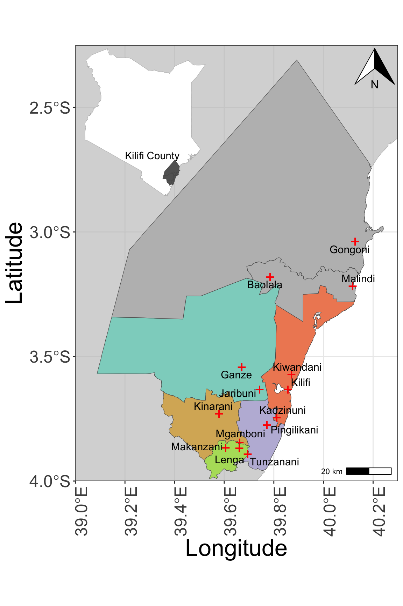

Executive summary
The Net - Community Based Malaria Programme was implemented in Kilifi County, Kenya from 2023 to 2025 to address low ITN usage, IPTp adherence, and malaria-related challenges. The program aimed to strengthen community-based malaria eradication mechanisms by 2024 through awareness campaigns, capacity building, and data collection improvements.
This report documents the impact of The Net’s activities and their outcomes in Kilifi County. It also describes the acceptance and sustainability of the initiative by the beneficiaries and stakeholders.
Study sites
The map below shows the location of the 10 health facilities within the 5 sub-counties (Ganze, Kaloleni, Kilifi North, Kilifi South, Rabai) that participated in the study. Malindi and Magarini sub-counties shown in gray were not part of the study. However, three health facilities (Baolala and Malindi in Malindi sub-county, and Gongoni in Magarini sub-county) were surveyed as part of the qualitative study.